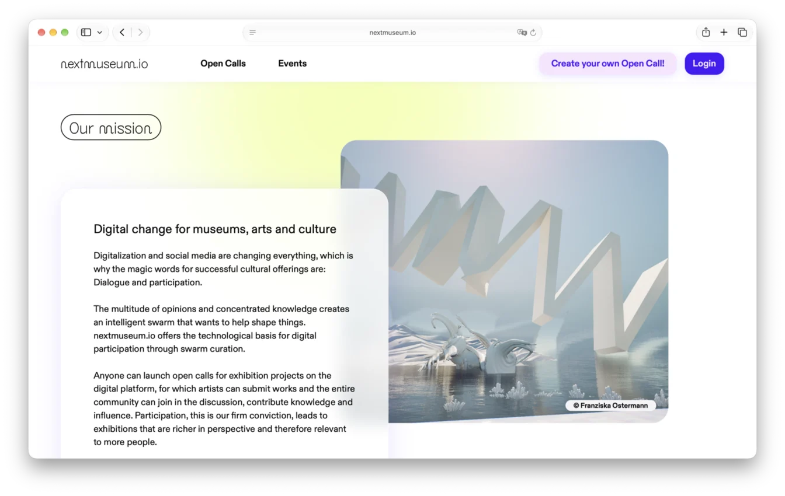
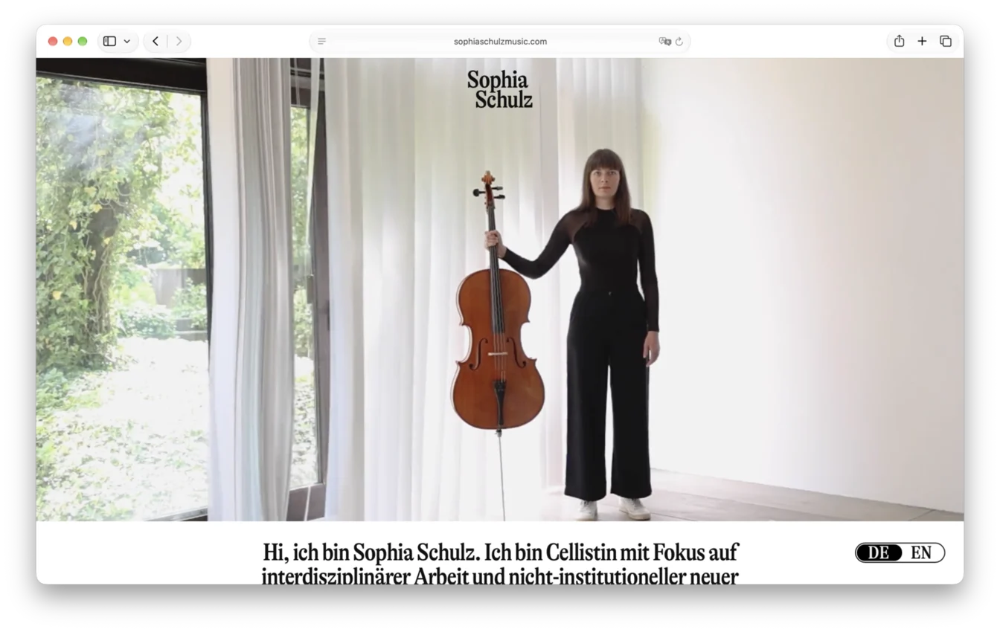
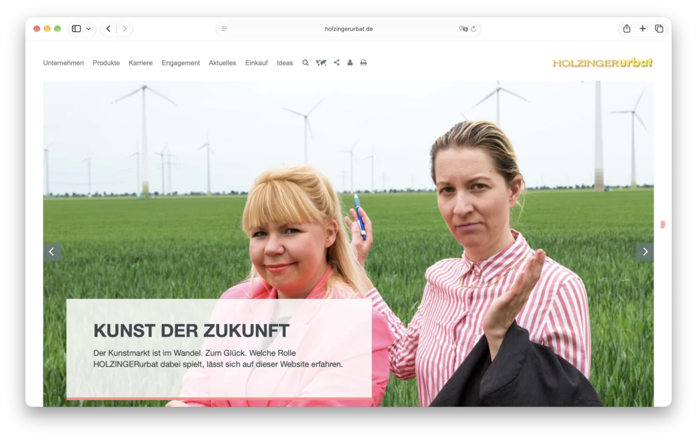
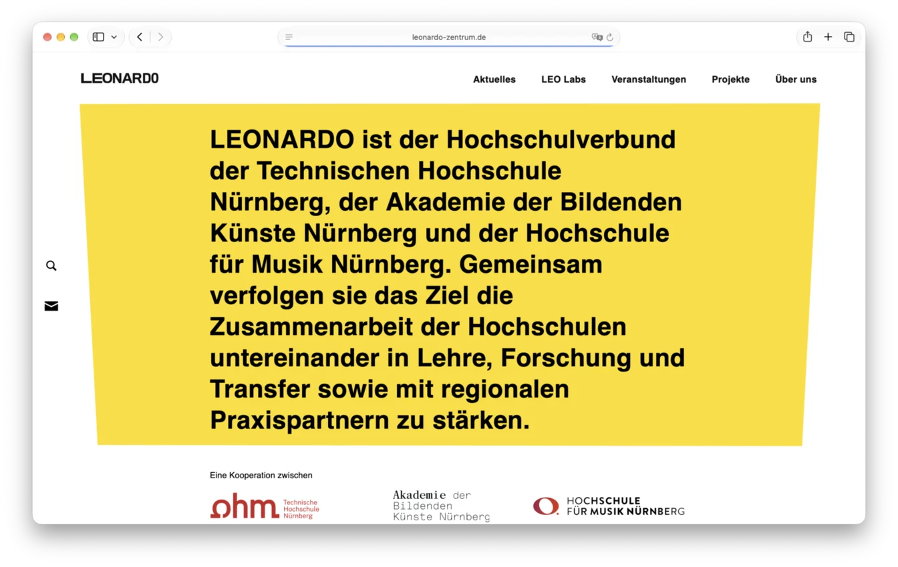
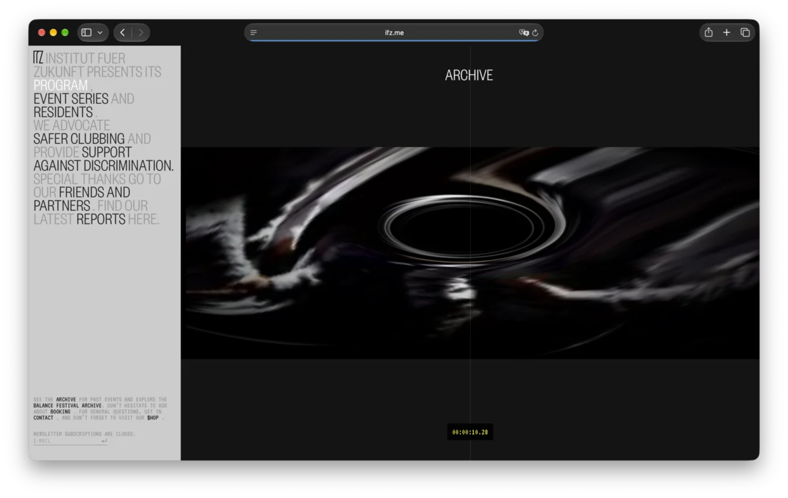
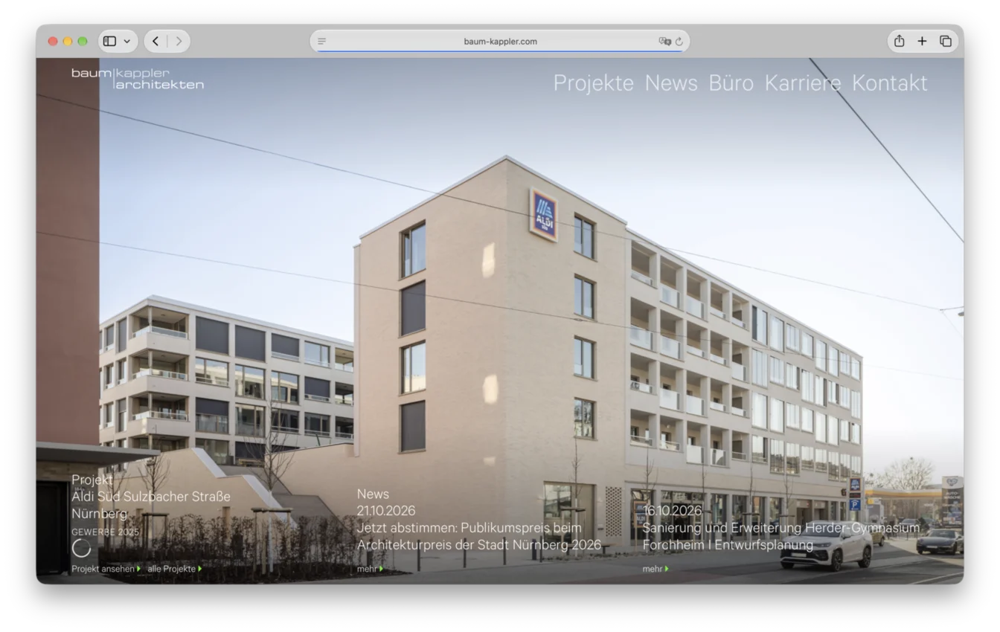
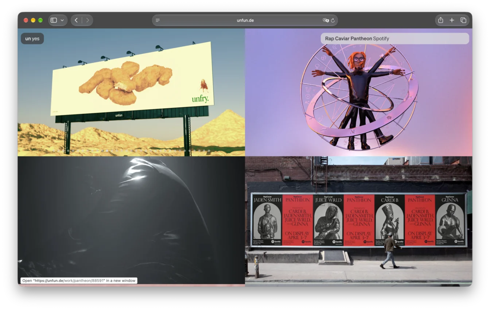
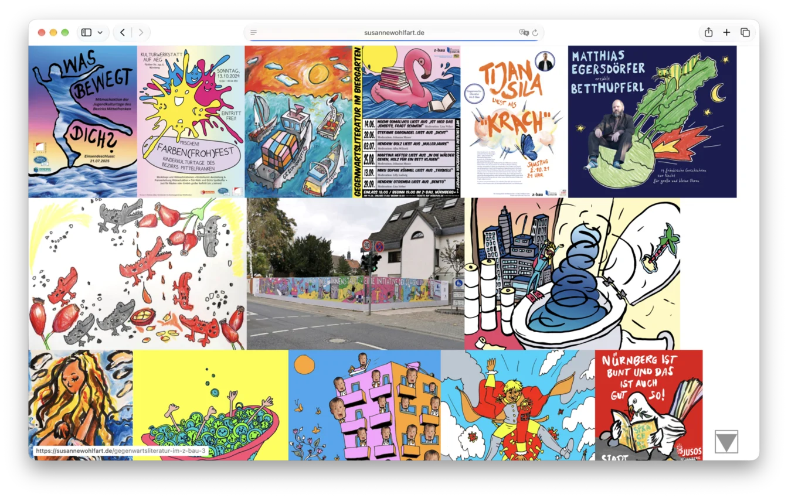

Emanuel Tannert
Frontend & UX Engineer
- 📍 Nürnberg, Germany
- 📧 post@etannert.de
- 📞 +49.176.82265557
- 🐙 github.com/smotchkkiss
Skills
-
Frontend & User Experience
- ⬡ Angular, TypeScript, SCSS, Tailwind: My modern frontend stack.
-
🎨️
I have collaborated closely with
designers,
artists and
product people my whole career.
I speak their language and know how to build what they mean. - 🍦 Vanilla JS, CSS, HTML: I grew up with and ❤️ the web platform.
-
Backend & Operations
Node.js, Python & PHP. MySQL/MariaDB & SQLite. WordPress.
Deployment, delivery & systems administration. Linux. Shell. -
Language & Communication
- ️📣Clear communicator
- ️📝I enjoy documenting my work
- 🇩🇪German: native
- 🇬🇧English: fluent
-
Learning & Teaching
- Lifelong learner: I educate myself from docs, consult the source, or let the AI explain.
- I also love to teach and have done so in talks, workshops and seminars.
Projects
-
nextmuseum.io

- Owner:
- NRW-Forum Düsseldorf and Museum Ulm
- Design:
- Future Forms
- Frontend:
- Angular, Tailwind
- Backend:
- Supabase
- Time:
- 2023–2024
-
MYSTERY FINTECH PROJECT (under NDA)
- Owner:
- [redacted]
- Frontend:
- Ionic, Angular, Tailwind
- Backend:
- Java
- Time:
- 2024–2025
Advanced Angular 16 app in the fintech industry. All the main functionalities were housed in live-data-fed widgets that users could arrange freely on a canvas. Widget types included charts, stock portfolios and other potentially long, virtualized lists. I implemented the data import from the previous, non-web version of the app, among other things.
-
sophiaschulzmusic.com

- Owner:
- Sophia Schulz
- Design:
- Complex Pleasures
- Technology:
- WordPress Theme – PHP, HTML, CSS and Vanilla JS
- Time:
- 2023
-
holzingerurbat.de

- Owner:
- HOLZINGERurbat
- Design:
- HOLZINGERurbat / brose
- Technology:
- WordPress Theme
- Time:
- 2021
HOLZINGERurbat's website is a work of art in its own right. The design mirrors that of mechatronics company brose's site. It is part of the collection of Kunstpalais Erlangen.
-
leonardo-zentrum.de

- Owner:
- Leonardo – Zentrum für Kreativität und Innovation
- Design:
- Philipp Stöcklein
- Technology:
- WordPress
- Time:
- 2021
-
ifz.me

- Owner:
- Institut für Zukunft
- Design:
- unfun
- Technology:
- WordPress, WebGL
- Time:
- 2017
IfZ was a progressive techno club in Leipzig. For the background animation, I hand coded a "black hole" WebGL shader that moves with the mouse pointer/device tilt.
-
baum-kappler.com

- Owner:
- baum-kappler architekten
- Design:
- unfun
- Technology:
- WordPress
- Time:
- 2019
-
unfun.de

- Owner:
- unfun
- Design:
- unfun
- Technology:
- WordPress
- Time:
- 2018
-
susannewohlfart.de

- Owner:
- Susanne Wohlfart
- Design:
- Susanne Wohlfart
- Technology:
- WordPress
- Time:
- 2015
Experience
-
User Experience Engineer, Future Forms, Stuttgart — 2023–2025
- Development of modular Angular Apps in an agile environment
- Implementation of features based on figma designs
- Code reviews and architecture decisions in the team
- Sprint planning, refinement, and time estimations
- Close collaboration with design and backend teams
-
System Administrator, Nuremberg Tech — 2021–2022
- Administration of Ubuntu VMs for Java and PHP Applications
- Secure hosting with nginx, Apache, php-fpm, MariaDB and PostgreSQL
-
Web Developer, unfun, Nürnberg — 2015–2019
- Development of interactive, responsive Websites and Apps
- React, JavaScript, WebGL / Three.js, WordPress, Node.js
-
Freelance Web Developer, Nürnberg — 2010–2013 + 2019–2023
Client projects in collaboration with various independent designers.
Questions, inquiries, praise, or just say hi? Email me at post@etannert.de.